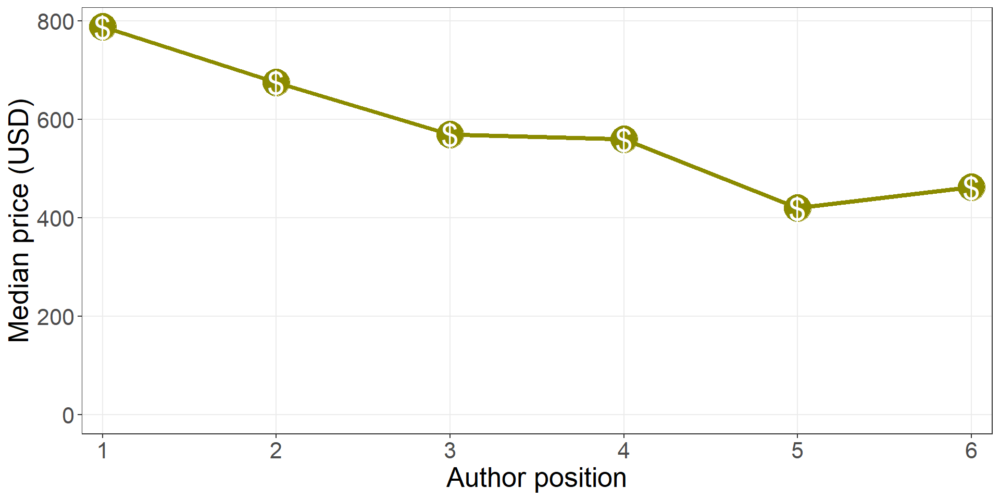
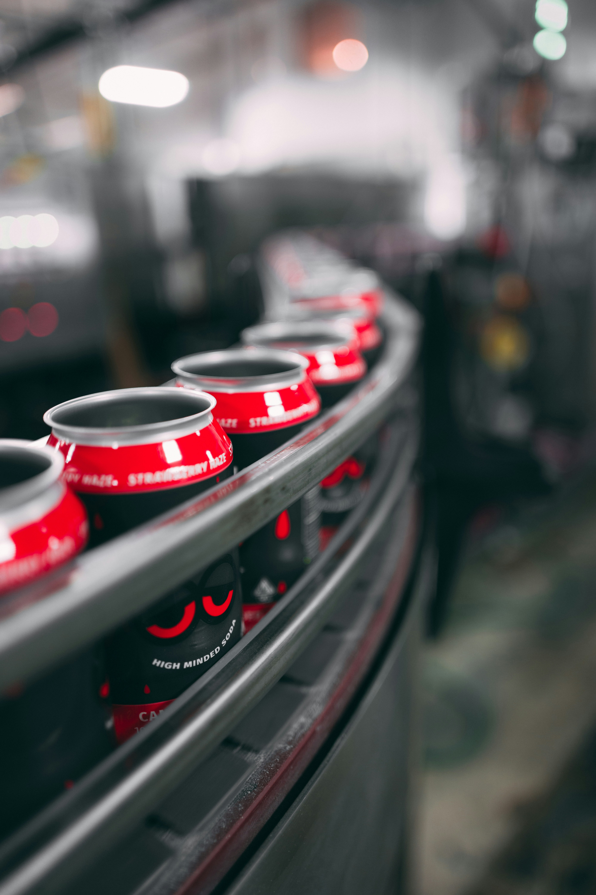
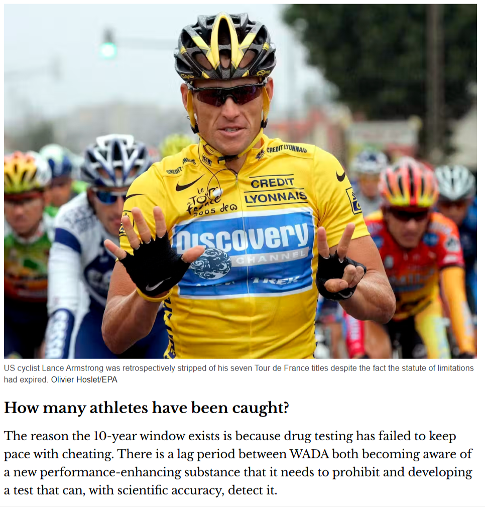
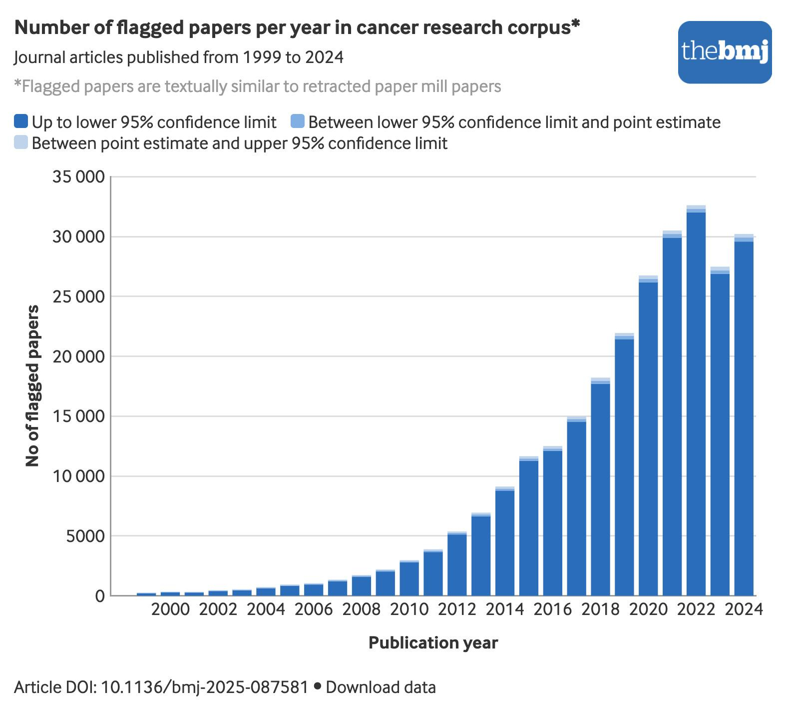
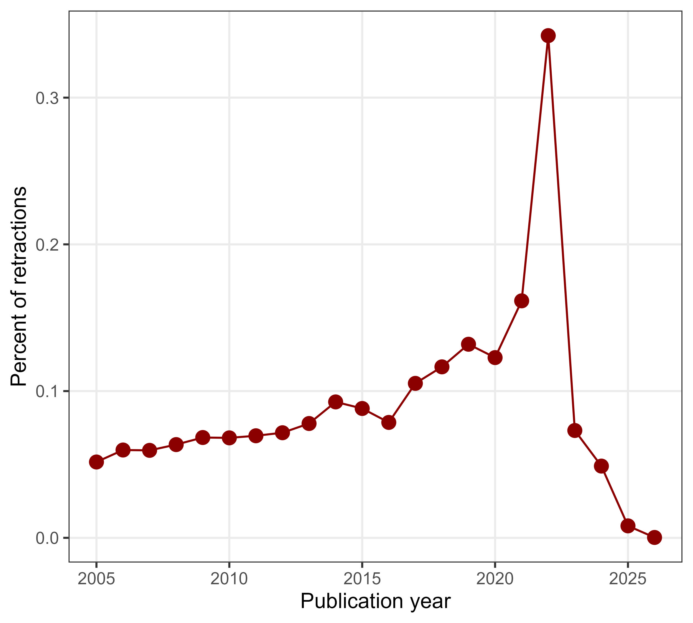
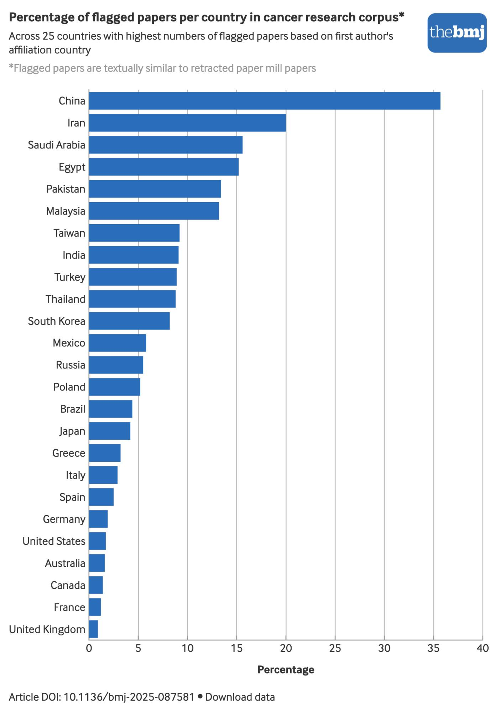
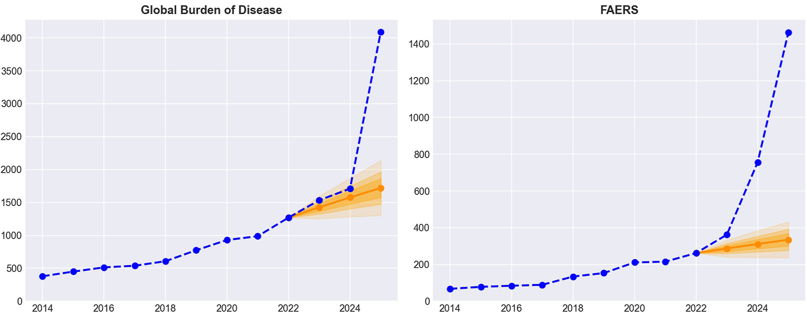
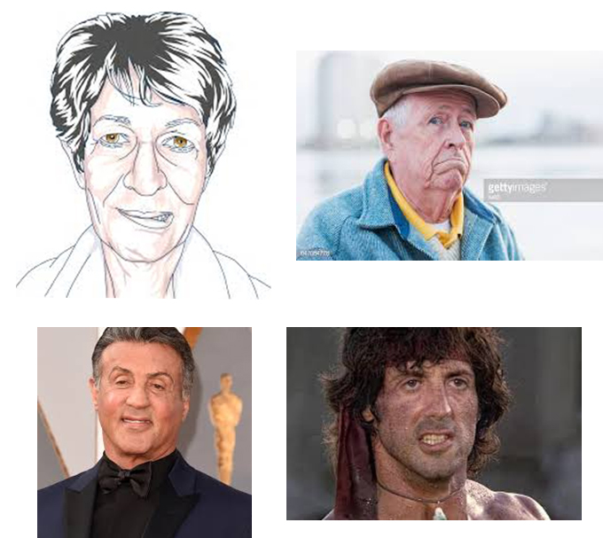
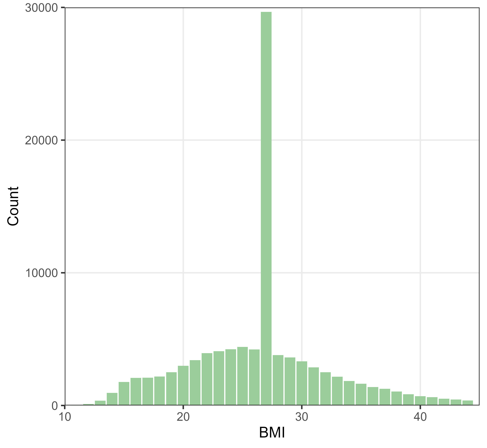

Paper mills: Writing cheques for chequered writing
Adrian Barnett
20 August 2026
20 August 2026
Queensland University of Technology
Photo by Quintin Soloviev, CC BY 4.0 via Wikimedia Commons
Slop machines
Writing cheques
Photo by Money Knack on Unsplash
Papers for sale
From author-for
-sale.bsky.social
Price of authorship
Checkered writing
Photo by Dagny Reese on Unsplash
Buyer beware!
MicroRNA-32 inhibits osteosarcoma cell proliferation and invasion by targeting Sox9
MicroRNA-153 inhibits osteosarcoma cells proliferation and invasion by targeting TGF-B2
MicroRNA-204 inhibits proliferation, migration, invasion and epithelial-mesenchymal transition in osteosarcoma cells via targeting Sirtuin 1

Thesis fall out
The data will find you

Technology catches up

Oil spill
“AI slop is an oil spill in our digital oceans”
Photo by Alex Albert on Unsplash
How deep?

How much is cleaned up?
- Retractions are increasing, but not enough

Ivan Oransky
Image and data from RetractionWatch
Where

Drill, baby, drill!

Data too open?
- With Matt Spick (Uni of Surrey), we created a paper using Prism (OpenAI) in 30 minutes with no human input
Data too open?
With Matt Spick (Uni of Surrey), we created a paper using Prism (OpenAI) in 30 minutes with no human input
Paper Orchestra (Google), produces a submission-ready manuscript with figures and verified citations in about 40 minutes
Data slop
“A smart camera located in patient rooms has been used to collect images”

Data slop
“A smart camera located in patient rooms has been used to collect images”
“An authoritative dataset was used as the research object”

Doctored data
Solutions?

Researchers leave paper trails

Take precautations
ArXiv is now:
Limiting submissions from computer science
Banning users for a year if they submit hallucinated references
Money for quality control
The American Society for Quality states that organisations typically spend 10 to 15% of their operating costs on quality-related costs
For the Australian NHMRC budget only, this would mean $740 million per year on quality-related work
What we actually spend is around $1 million
Money for quality control
The American Society for Quality states that organisations typically spend 10 to 15% of their operating costs on quality-related costs
For the Australian NHMRC budget only, this would mean $740 million per year on quality-related work
What we actually spend is around $1 million
Publishers cry poor, but last year the mega-publisher Elsevier made GBP £1.2 billion in profit
Turn down the heat